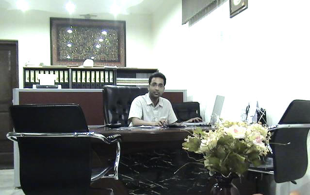

|
Home | About Us | Services | Team | Join Us | Awards | Calendar | Vote | Supporters | Contact |
||||||||||
|
||||||||||
|
eIEN Kashmir formally known as ĕsro Making a Difference the largest environmental project in the Shared Vision Program of the Kashmir Valley eIEN Kashmir is formal association of leading experts in sustainable development and environment related issues, environmental: policy, governance, security, diplomacy, strategic planning, impact assessment, due diligence, natural disaster mitigation, as well as waste management, cleaner technologies, green procurements and infrastructure, local development, climate change related issues. eIEN Kashmir is not-for-profit made consulting group project oriented, having respective record of successful projects implemented by core experts within last five years. In addition, having network of different specialists and volunteers, “eIEN Kashmir” is acting also as non-governmental organization. The dynamic core of the eIEN Kashmir is action and initiatives on the ground, supporting efforts of the government in environmental conservation. Good record on organization of Symposiums, Meetings, Trainings and Workshops. eIEN Kashmir Mission is to:
The origin of the eIEN Kashmir formally known as ĕsro ( Environment Services and Research Organization) lie in many struggles waged by affected communities and NGOs across the Western Himalaya, particularly in Kashmir and with this fact that Governments cannot solve all our environmental problems, important as they are, they are only part of the solution. Also needed are individual responsibility and actions to undo the damage. With this ideology, a group of four Kashmiri scholars came together in 2001 from diverse professional backgrounds, during turmoil in Kashmir, when talking environment and ecology for many was like talking taboo at a prayer but they had been determined to span the gulf between academic theory and practical problem solving to tackle the emerging biodiversity crisis. Through international collaboration from non-government organizations, universities, governments, multilateral agencies and the private sector, their work was acknowledged across the State, hundreds of likeminded people, some of them as top Kashmiri consultants and researchers across the globe became part of their mission- working together for sustainable development in Kashmir. In addition, having network of different specialists and volunteers, “eIEN Kashmir” is acting also as non-governmental organization,consulting group project oriented, having respective record of successful projects
Till 2002, perspective broadened to encompass whole Western Himalaya. The proposal to change esro's name as eIEN Kashmir came up during an international workshop organized in mid-September, 2002 by International Environment Network South Asia (comprises five regional networks in Asia ) and esro. Thus eIEN Kashmir was formally launched with the establishment of Kashmir’s first international research based conservation organisation run by local environment professionals. The launch marks the start of a dynamic new initiative to engage new public and political support for conservation in Kashmir.
Today mission, eIEN Kashmir, is working under 18 observer Nodes; and expertise service support of more than 120 internationally acclaimed scientists, 200 experienced campaigners, legal and political experts and more than 700 volunteers across the Valley. We have mandate to promote Kashmir's ecological security, conserving biological diversity, ensuring sustainable use of natural resources, minimizing pollution & wasteful consumption and promoting sustainable life style. We earn most of our budget for the objectives through entrepreneurial ventures and corporate partnerships. Our thrust area includes wildlife, forests and water resources, natural disaster mitigation, environment education, pollution abatement, besides developing policy, planning and advocating on issues related to Kashmir environment. Since we are now self supportive organization, in achieving our mission, eIEN Kashmir uses the following main programme methods.
Since 2004 eIEN Kashmir has grown to become renowned worldwide. Its success is reflected in a range of achievements:
We believe that sharing information, experiences and resources is vital for the achieving common objectives regarding environment conservation and protection. The regional NGO is, therefore, committed to contributing effectively to the provision of requisite for and appropriate channels for people to network as individuals and as representatives of organizations, agencies, institutions, associations and communities. eIEN Kashmir serves as a cohesive force in dealing with environmental conservation issues of local, national, regional and global concern. The Network discourages duplication of efforts and encourages the use of minimal energy, time and resources for the achievement of environmental conservation objectives and goals at all levels.
eIEN Kashmir is a member driven professional organisation of Environment Science, Environment Management and Environmental Engineering university graduates and professionals having long experience in the field of environment and development with special focus in Kashmir with a aim to strengthen cooperation among the concerned professionals and build a network of like minded people and organisations in Kashmir and abroad to ensure environmental sustainability in Kashmir. The eIEN Partnership is not creating a new entity. It builds on the alliance of individuals and organizations purely involved in Kashmir environmental issues without any hidden political agenda's.
Jammu and Kashmir may be called as the biomass state of India and this character of the state need not only to be maintained but also augmented. Conservation of biodiversity of Kashmir would actually ensure perpetual availability of biomass in the state which inturn would ensure the livelihood of the people of the state. People orientated and biomass based micro and mega enterprises are the answer to the development of the state.
► MESSAGE FROM :- New Honorary Regional Programme Cordinator eIEN Kashmir

eIEN Kashmir - South Asia Western Himalaya is a capacity building project promoting Kashmir's ecological security, the largest project in the Shared Vision Program of the Kashmir. We are now five year old in the Kashmir Valley. It give me great pleasure to inform you that eIEN Kashmir has started publishing quarterly "The Reporter" for dissemination of information important to our survival. I hope you will help us in improving the quality of "The Reporter" with your valuable inputs and suggestions. With your cooperation's in the last five years we have achieved several milestones in the Valey and yet more is to be accomplished.
We have much to do together in our effort to conserve Kashmir environment. Most importantly, our work has made a difference: it has and will continue to help to solve problems for the environment and mankind". Come and work towards safeguarding future environment of Kashmir with us.
|
||||||||||
|
This Web Site can be best
viewed at 1024 × 768 pixel resolution |
© eIEN Kashmir 2002
- 2007 | Powered by Web Dimensions - South Korea Environment Services And Research Organization (esro) International
Environment Network South Asia Western Himalaya Kashmir
|
|